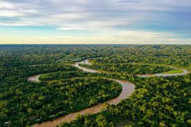
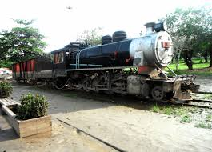
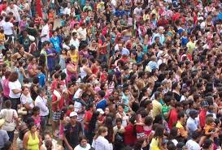

Curiosidades sobre Rondônia

Grande parte coberta pela Floresta Amazônica
Rondônia possui uma vasta área coberta pela Floresta Amazônica, abrigando uma enorme diversidade de flora e fauna, incluindo espécies endêmicas e muitas ainda desconhecidas.

Estrada de Ferro Madeira-Mamoré
Construída no início do século XX, a Estrada de Ferro Madeira-Mamoré é uma obra histórica que marcou o desenvolvimento da região e é conhecida por suas dificuldades de construção e importância na exportação da borracha.

População diversa
A população de Rondônia é formada por migrantes de várias partes do Brasil, incluindo muitos do Sul e Sudeste, criando uma rica mistura cultural e tradições.